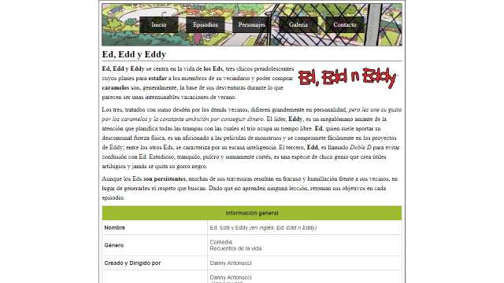

🏠 Inicio
FaArMa Online es un sitio web no lineal, en el que escribes tu propia historia sin limitarte a seguir un camino prefijado.
Bueno basta de bromas, solo quería hacer algo simple y bonito. Ahí es donde entra esta pequeña pagina web, fin.
📝 Sobre mi
Soy Fabricio, un desarrollador de software de Argentina apasionado por el aprendizaje y el progreso.
Me recibí de Técnico Universitario en Programación en la Universidad Tecnológica Nacional.
Tengo más de 6 años de experiencia proporcionando soporte técnico a personas de cualquier parte del mundo en múltiples idiomas para resolver problemas informáticos.
A lo largo de mi trayectoria he adquirido conocimientos y experiencias en una amplia gama de áreas. He creado servidores en distintos videojuegos, configurado servidores web, realizado pruebas de software y desarrollado scripts para automatizar tareas, entre otras cosas.
💼 Portafolio
SGG-Web
Un sitio web para la parte práctica del segundo parcial de Laboratorio de Computación IV
SGG-GDEng
Un Sistema de Gestión Gastronómico desarrollado como parte de la Practica Profesional Supervisada
LosEds

Un sitio web para la parte práctica del segundo parcial de Laboratorio de Computación III
CaC-EgUniv
El TP Final del curso Full-Stack Java de Codo a Codo